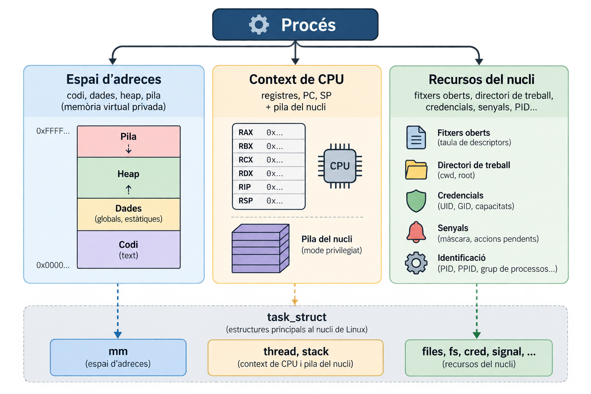
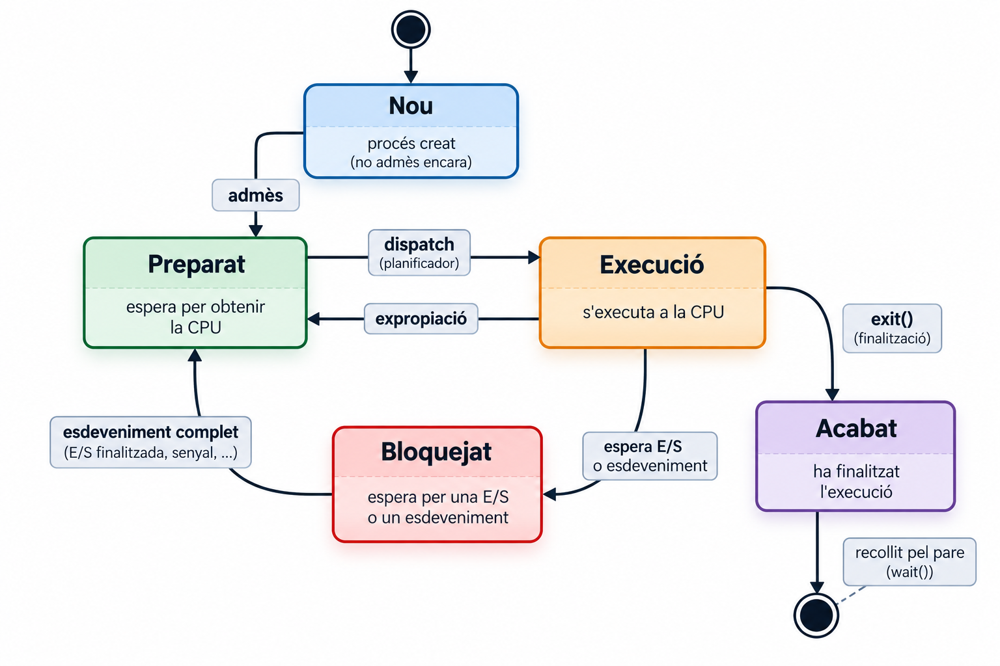
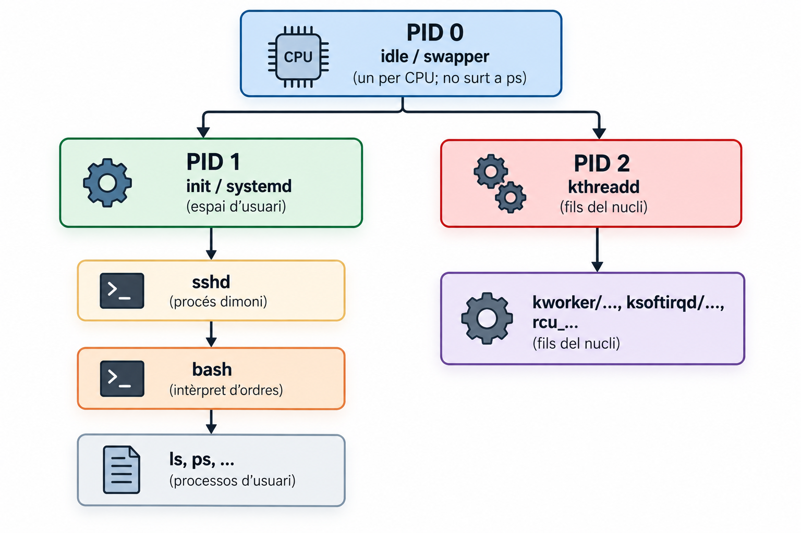
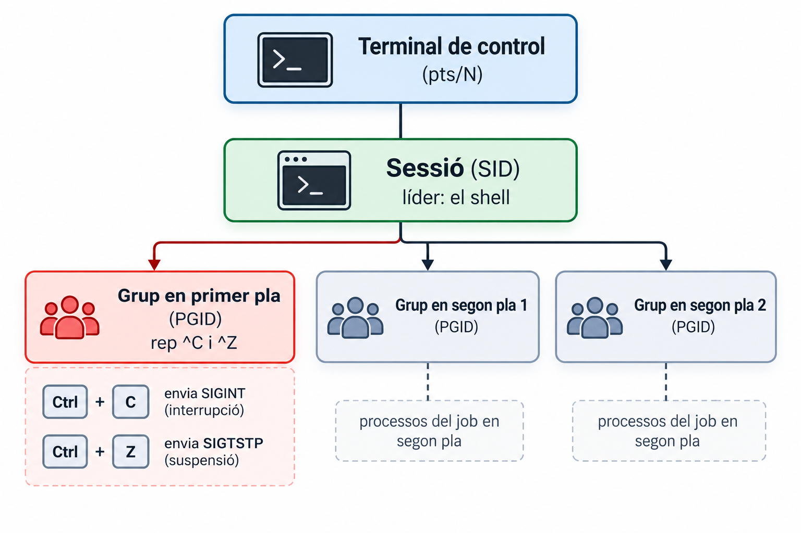

El motor de l’execució: què és un procés, com canvia d’estat i què guarda el nucli
Jordi Mateo Fornés
Objectius
Objectius d'Aprenentatge — Què aprendrem avui
Distingir programa i procés, i descriure què el compon: espai d’adreces, context de CPU i recursos del nucli.
Explicar què és un canvi de context, què el provoca i en què es diferencia d’un canvi de mode.
Aplicar el model de 5 estats i traduir-lo als estats reals de Linux (R, S, D, T, Z).
Llegir la PCB de Linux (task_struct) i inspeccionar un procés real amb ps, top i /proc.
Situar un procés a l’arbre: PID 0/1/2, grups de processos i sessions.
Punt de partida
Prerequisits — Ho hem vist a les sessions de crides al sistema
El maquinari té (com a mínim) dos modes: usuari i nucli. El codi d’usuari no pot tocar el maquinari ni la memòria del nucli.
Hi ha tres maneres d’entrar al nucli: crida al sistema (síncrona), excepció (síncrona) i interrupció (asíncrona).
En entrar, la CPU canvia de mode i salta a un punt fix que el nucli ha configurat.
Programa vs. procés
Definició — Procés
Un procés és una instància d’un programa en execució: una entitat activa amb el seu propi espai d’adreces, el seu context de CPU i els seus recursos del nucli.
Programa
Procés
Naturalesa
Passiu: un fitxer (p. ex. ELF)
Actiu: existeix mentre s’executa
Té
Codi i dades inicials
Espai d’adreces, registres, fitxers oberts, PID…
Quantitat
1 fitxer
Molts processos del mateix programa
Si 10 usuaris executen vi, hi ha 10 processos, però el codi és el mateix fitxer i el nucli el comparteix a memòria.
Demo · un programa, tres processos
Exemple — Què cal observar
Tres processos sleep amb PID diferents i el mateix pare.
El codi (r-xp) és el mateix fitxer i el mateix inode: el nucli en comparteix les pàgines.
Un procés són tres coses

Concepte — Dues il·lusions
El nucli ofereix a cada procés (1) la il·lusió de tenir la CPU per a ell sol (flux de control propi) i (2) la de tenir tota la memòria per a ell sol (espai d’adreces privat).
Canvi de mode vs. canvi de context
Canvi de mode
Canvi de context
Què canvia
El nivell de privilegi (usuari ↔︎ nucli)
Quina tasca executa a la CPU
Qui
mateixa tasca
un altra tasca
Procés
El mateix procés
Un procés diferent
Causes
Crida al sistema, excepció, interrupció
Expropiació, bloqueig (E/S), sched_yield, exit
Es desa
El mínim (PC, SP, indicadors…)
El context complet + canvi d’espai d’adreces
Cost
Baix
Més alt (TLB, cachés, planificador)
Error Comú — No és el mateix
Una crida al sistema no implica un canvi de context: el procés entra al nucli i en surt sense perdre la CPU. Només si la crida bloqueja (p. ex. read() d’un disc) el nucli en dóna la CPU a un altre.
Què passa en un canvi de context
sequenceDiagram
participant A as Procés A (mode usuari)
participant K as Nucli
participant B as Procés B
A->>K: interrupció de rellotge (canvi de mode, pila del nucli de A)
K->>K: desa el context de A (registres, PC, SP) a la seva pila del nucli i al task_struct
K->>K: el planificador tria B
K->>K: canvia de pila del nucli i d'espai d'adreces (taula de pàgines de B)
K->>K: restaura el context de B
K-->>B: torna a mode usuari (iret / eret): B continua on ho havia deixat
Note over A,B: A queda preparat: el seu context espera al task_struct
Canvis de context: voluntaris i no voluntaris
Concepte — Dues classes
Voluntari: el procés cedeix la CPU perquè s’ha de bloquejar (read, sleep, wait…).
No voluntari: el nucli li pren la CPU (expropiació: se li ha acabat el temps o hi ha algú més prioritari).
Exemple — Com comprovar-ho
Linux ho compta per procés a /proc/PID/status: voluntary_ctxt_switches i nonvoluntary_ctxt_switches :
grep ctxt /proc/$$/status
El model de 5 estats

Transició
Qui la provoca
Preparat → Execució
Planificador
Execució → Preparat
Rellotge (expropiació)
Execució → Bloquejat
El procés (crida bloquejant)
Bloquejat → Preparat
Maquinari (interrupció) o un altre procés
Execució → Acabat
El procés (exit) o un senyal
Concepte — Regla
Només el planificador decideix quin procés preparat passa a execució. Un procés mai es desbloqueja a si mateix.
Els estats reals de Linux
Exemple
Per veure ,és informació sobre els processos poder fer man ps i llegir la secció PROCESS STATE CODES.
ps
Nucli
Què significa
R
TASK_RUNNING
A la CPU o a la cua d’execució (executant-se o preparat)
S
TASK_INTERRUPTIBLE
Dorm esperant un esdeveniment; un senyal el desperta
D
TASK_UNINTERRUPTIBLE (i KILLABLE)
Dorm sense atendre senyals (típic: E/S)
T
__TASK_STOPPED
Aturat per senyal (SIGSTOP, SIGTSTP); SIGCONT el reprèn
t
__TASK_TRACED
Aturat per un depurador (ptrace)
I
TASK_IDLE
Fil del nucli inactiu
Z
EXIT_ZOMBIE
Acabat, esperant que el pare el reculli
X
EXIT_DEAD
Mort (no es veu mai)
Exemple
Podeu consultar sched.h es representen els estats de les tasques. TASK_RUNNING indica que la tasca és runnable: pot executar-se, tant si està esperant que el planificador li assigni la CPU com si s’està executant en aquell moment. En canvi, TASK_INTERRUPTIBLE i TASK_UNINTERRUPTIBLE representen diferents formes d’espera (dormit).
R no vol dir «executant-se»
Concepte — Preparat i Execució, a Linux, són el mateix estat
Al camp d’estat del nucli no hi ha cap valor Running diferent de Ready: TASK_RUNNING cobreix tots dos. Que un procés estigui a la CPU o a la cua és una dada del planificador, no un estat. El model de 5 estats és el bon model mental, però ps no distingeix aquests dos estats.
Error Comú — `D` és l'estat que fa por
Un procés en Dno respon ni a SIGKILL fins que acabi l’espera (típicament E/S a disc o xarxa: un NFS caigut). Compta també al load average. Si molts processos són en D, el sistema va lent encara que la CPU estigui lliure.
Un model històric: UNIX System V (Bach)
Error Comú — Model històric: no és Linux
Molts llibres descriuen 9 estats: executant en mode usuari, executant en mode nucli, preparat en memòria, dormit en memòria, preparat intercanviat, dormit intercanviat, expropiat, creat i zombi.
Model
A Linux
Swapping de processos sencers (estats intercanviat)
Linux fa paginació: intercanvia pàgines, no processos
Nucli no expropiable: un procés expropiat torna sempre a mode usuari
Un procés pot perdre la CPU mentre executa codi del nucli (segons CONFIG_PREEMPT*)
El mode (usuari/nucli) forma part de l’estat
El mode és ortogonal a l’estat del planificador
Definició — Ortogonal
Dos conceptes són ortogonals si no depenen l’un de l’altre: el mode d’execució (usuari/nucli) és independent de l’estat del planificador (preparat, execució, bloquejat…).
Demo · fg i bg
La PCB de Linux: task_struct
PCB: l’estructura de dades del nucli amb tot el que sap d’un procés. A Linux és struct task_struct (include/linux/sched.h).
prio, static_prio, policy, sched_class, se, on_cpu
Prioritat i estadístiques
Memòria
mm, active_mm
L’espai d’adreces
Context de CPU
thread (registres desats), stack (pila del nucli), thread_info
Reprendre el procés
Recursos
files, fs, nsproxy, signal, sighand, cred
Fitxers, dir. de treball, namespaces, senyals, credencials
Nom
comm
Nom curt (ps el mostra)
PID, TGID i TID
Concepte — PID, TGID i TID
Cada task té el seu identificador pid al nucli. El que l’espai d’usuari anomena PID és el tgid (l’identificador del grup de fils), i el que anomena TID és el pid de la task.
Espai d’usuari
Camp del nucli
Valor
getpid()
tgid
Igual per a tots els fils d’un procés
gettid()
pid
Únic per a cada fil
Fil principal
pid == tgid
El fil principal té TID = PID
Concepte — Fil
Un fil és una task que comparteix amb les altres l’espai d’adreces i part dels recursos. Cada fil té un TID propi, però tots els fils del mateix procés tenen el mateix TGID. Un procés és un conjunt de fils amb el mateix TGID.
Demo · fils = tasks amb el mateix TGID
staticvoid*fil(void*arg){ printf("fil %ld: getpid()=%d gettid()=%ld\n",(long)arg, getpid(), syscall(SYS_gettid)); fflush(stdout);sleep(30);return NULL;}int main(void){ pthread_t t[3];for(long i =0; i <3; i++)if(pthread_create(&t[i], NULL, fil,(void*)i)!=0)return EXIT_FAILURE; printf("main: getpid()=%d gettid()=%ld\n", getpid(), syscall(SYS_gettid)); fflush(stdout);for(int i =0; i <3; i++) pthread_join(t[i], NULL);return EXIT_SUCCESS;}
Demo · fils = tasks amb el mateix TGID
Exemple — Què cal observar
Un sol PID, però NLWP = 4: el fil principal i tres fils més.
Cada fil té TID propi i /proc/PID/task/ en llista un per fil.
/proc: la PCB des de l’espai d’usuari
/proc/<pid>/ és un pseudo-sistema de fitxers: el nucli genera el contingut en llegir-lo, a partir de la PCB i altres estructures. No és el «taula de processos» real.
Entrada
Què mostra
status
Estat, PID, PPID, memòria, canvis de context
stat
El mateix, en una línia (l’usa ps)
cmdline, environ
Arguments i entorn (separats per \0)
fd/, cwd, exe
Fitxers oberts, directori, executable
maps
Espai d’adreces
task/
Un directori per fil
Bona Pràctica — Llegiu-ho bé
less /proc/<pid>/stat és il·legible. Useu cat /proc/<pid>/status, i per a environ:
tr'\0''\n'< /proc/$$/environ
$$ és el PID del shell actual.
Demo · /proc/PID
L’arbre de processos: PID 0, 1 i 2

Els únics processos sense pare són el PID 0 (l’inactiu). PID 1 i PID 2 són fills seus, no orfes.
El PID 1 neix com a fil del nucli que fa exec de /sbin/init.
Init és el pare de tots els processos d’usuari (i adopta els orfes), no de tots els processos.
Els fils del nucli[kworker/...] són fills del PID 2.
Demo · l’arbre de processos
Grups de processos i sessions

Un grup de processos (PGID) agrupa processos relacionats; una ordre com a | b | c és un grup.
Una sessió (SID) agrupa grups i està lligada a un terminal de control.
Els senyals del terminal (^C, ^Z) van al grup en primer pla.
Es pot enviar un senyal a tot un grup: kill -TERM -- -<PGID>.
Demo · grups de processos i sessions
Observar processos: ps i top
ps# els del teu usuari i terminalps-e# tots els processosps-ef--forest# arbre amb PPIDps-o pid,ppid,pgid,sid,tty,stat,wchan:20,cmdps-L-p<pid># els fils d'un procéspstree-p-s$$# de l'arrel al meu shell
Concepte
ps sense opcions mostra els processos amb el mateix usuari efectiu i el mateix terminal de control que l’ordre, no «els de la sessió».
Columna (ps -l)
Significat
S
Estat (R S D T Z)
PPID
PID del pare
C
Ús de CPU (%)
PRI, NI
Prioritat i nice
SZ
Mida en pàgines
WCHAN
Funció del nucli on dorm
TIME
CPU acumulada
Concepte
Load average (1, 5, 15 min): mitjana de tasks en R + D.
Un valor alt amb la CPU lliure vol dir molts processos en D.
Demo · ps com a eina d’inspecció de processos
Resum
Resum
Un procés és un programa en execució: espai d’adreces, context de CPU i recursos del nucli.
El nucli canvia de context (per bloqueig o expropiació) per repartir la CPU: no és el mateix que un canvi de mode.
El model de 5 estats s’ha de traduir a Linux: R cobreix preparat i execució; D pot no respondre immediatament als senyals mentre està en aquesta espera.
La PCB (task_struct) és el que fork()/clone() copia o comparteix: la clau de la sessió següent.
L’arbre té arrel al PID 0; init és avantpassat dels processos d’usuari.